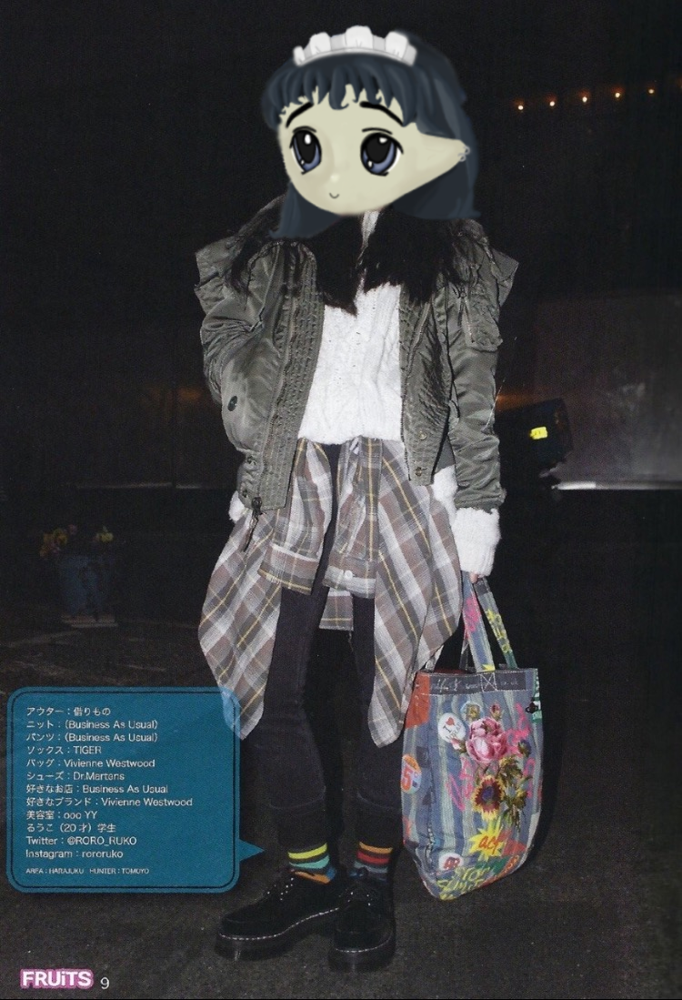

Welcome to Milady Maker! — ゆっくりしていってね!
Milady Maker is a collection of 10,000 generative pfpNFT's in a neochibi aesthetic inspired by street style
tribes.
Details:
-
Avatar-first design: Illustrated from the beginning to ensure strong social media profile aesthetics with
an emphasis on fashion. Ties into the planned generative NFT Header.
-
Chain roll function: Randomized cosmetics are organized into
different style themes, with a chance of the consecutive generation sticking to the same
theme, designed to organically produce aesthetic coherency.
-
Graded for Drip: Milady's have ranked badges on a variety of weighted metrics,
adding additional layers to a speculative market beyond objective trait scarcity.
-
Neochibi Aesthetic: All art produced by digital painter,
Milady Sonora, in her unique childlike take on anime
illustration.
-
Milady Village: Members-only Discord community and designated launchpad for
expansions to the Milady project, such as generative NFT banners and mixtape
series.
Milady Village Community Discord |
Milady Maker Official Twitter
Milady Maker Minting
All 10,000 Milady's will be fairly launched in a simultaneous drop. 9,500 will be
for sale with 500 set aside as a community reserve.
Mint your Milady:
Note: Milady's are revealed on OpenSea in batches as they mint. Please be patient as metadata can take some time to update!
View the Collection
10,000 unique Milady NFT's will be produced from over 100,000 possible combinations. No new Gen 1 Milady's will
ever be minted after this sale.

Milady style is inspired by the subcultural fashion tribes of Y2K Japan.
Style Themes
Milady's generate a variety of accessories, but the two primary cosmetics - Hat & Shirt - are each divided
into five major style themes inspired by Tokyo fashion tribes:

Prep

Lolita
The bottom border of a Milady card is defined by its theme(s). A Milady whose Hat & Shirt cosmetic share the
same theme receives +5 on their Drip Score.

Milady's produce eclectic but spiritually coherent outfits.
Drip Grade
Milady's each have a drip score rating their overall stylisnhness, with each cosmetic scored on its rarity, then
weighted against the prominence of its slot, with a multiplier applied for theme or costume complete badges.
Drip score are designed to help tie value to aesthetics over pure trait scarcity.
Milady's are given a letter grading for their drip score (D, C, B, A, S, SS) to help categorize an individual
Milady's quality.
Expansion Packs
Planned expansion packs to develop the Milady ecosystem, aesthetic and community:
Milady Banners: Generative NFT header photo series, available to mint only to Milady NFT owners. The
banners are being designed with a novel generative algorithm styled to match aesthetically with Milady pfpNFT's
as an extension of their avatar-first design, and made downloadable in multiple formats and resolutions.
Milady Mixtapes: Series of Mixtapes produced by Milady Sonora minted on an audio NFT platform, available
to stream only to the NFT owner and Milady holders.
About Milady Maker — プリンセスメーカーについて